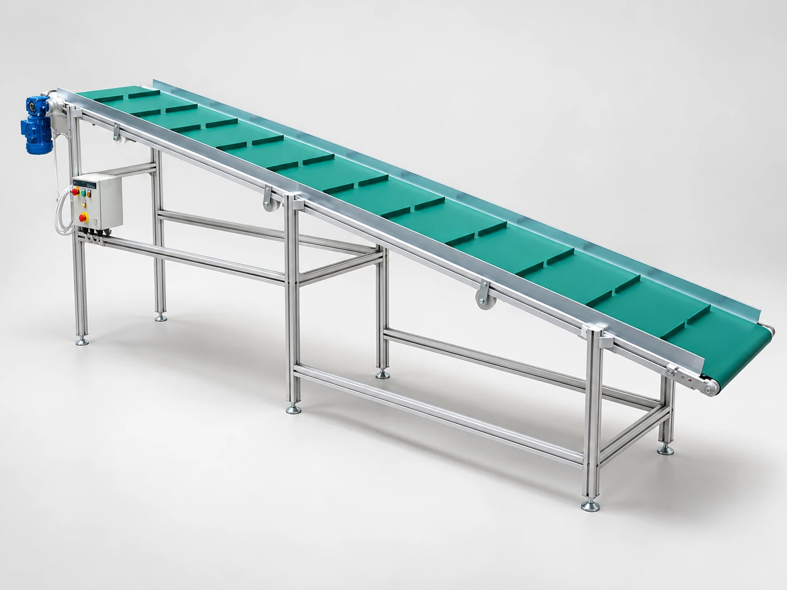

01 /
Inspection · End-of-line testing
Vision & testing
Inspection cells and test benches designed around your component and quality checks.
Explore the rangeEngineering for the factory floor
Automation, control systems and custom equipment. Thoughtfully engineered around the way you work.
Explore our capabilities01 / What we do
From a single workstation to a complete control system, we bring the mechanical and electrical details together.
PLC and SCADA programming, robotic integration and control panels.
02Special-purpose machines, assembly lines and conveyor integration.
03Operator workstations, material handling and machine guarding.
04Commissioning, preventive maintenance and technical support.
02 / Built for your process
Inspection · End-of-line testing
Inspection cells and test benches designed around your component and quality checks.
Explore the range
Material flow · Assembly
Conveyor and assembly layouts that move parts through your production process.
Explore the range03 / The IECS approach
Every factory works differently. We look at the process first, then design the equipment and controls to fit.
Get to know IECS
04 / From concept to commissioning
We start with your process, your constraints and the people who use it.
We turn the requirement into a practical design, with the details agreed.
Fabrication, controls and installation come together around your line.
Commissioning and maintenance support the equipment beyond handover.
Let’s make it work